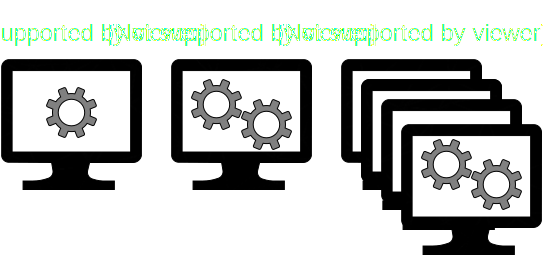

Parallelization of Constraint Programming using Embarrassingly Parallel Search
Guillaume DervalJune 24th 2016
Contents
- CP, Parallel and Distributed Computing in 120 seconds
- Distributing CP
- Decompositions
- OscaR-Modeling - DSL
- OscaR-Modeling - Architecture
CP, Parallel and Distributed Computing in 120 seconds
Constraint programming
To cite Eugene Freuder (in its famous paper In Pursuit of the Holy Grail):“Constraint Programming represents one of the closest approaches computer science has yet made to the Holy Grail of programming: the user states the problem, the computer solves it.”
Constraint programming(2)
- Given a CSP/COP
- Visit the "whole" search space
- Cut in the tree using "constraints"
Serial, Parallel, Distributed computing
Speedup and efficiency
Speedup $S$ (in latency):
Ratio between the time taken to run on the "old" arch., and the time on the "new" one.Efficiency $\eta$:
Speedup divided by the number of threads/cores/workers involved.Distributing CP
Static Decomposition
- Divide the initial problem
- S.t. each worker has a subproblem
- Decomposing is hard
Work-Stealing
- Idle workers "steals" work
- Start with a single worker with the full problem
- Idle worker stop solving workers to ask for work
- Difficult to say when to stop
- Too much communication -> slow
Embarassingly Parallel Search
- Extension of Static Decomposition
- Numerous subproblems
- Static or dynamic assignation to worker
- More subproblems = better balancing
Decompositions
Importance of decompositions
Given $t_{\text{max}}$, the solving time of the largest subproblem:
- Minimum solving time is then $t_{\text{max}}$
- The maximum inactivity time of any worker is $t_{\text{max}}$
Decompositions should minimize $t_{\text{max}}$.
Decompositions on COPs
For optimization problems
More balanced subproblems = better chances to find the optimum rapidly
IDDFS
Iterative deepening DFS, subproblems are the nodes on the last depth visited.- For maxDepth=1
- Do a DFS up to depth maxDepth, keep frontier in memory
- If frontier not big enough, increase maxDepth, start from 1
- Return frontier as subproblems
Complexity
For $n$ the number of subproblems and $b$ the branching factor:
- Time complexity: $\mathcal{O}(n)$
- Space complexity: $\mathcal{O}(n)$
NB: time complexity = number of calls to the fixed-point
Good enough?
Implicit assumption: each node at the same height are +/- the same space sizeIn practice? False.

CPIR
Idea: iterative refinement + decompose bigger subproblems first.Bigger = greater Cartesian Product Cardinality
- Init a priority queue pq
- Put the initial problem inside
- While pq.size < threshold
- Get biggest subproblem
- Divide it
- Put new subproblems in the queue
Complexity
For $n$ the number of subproblems and $b$ the branching factor:
- Time complexity: $\mathcal{O}(n)$
- Space complexity: $\mathcal{O}(n)$
NB: time complexity = number of calls to the fixed-point.
Good enough?